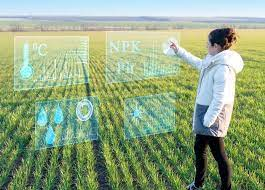
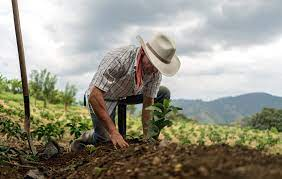

A agricultura sustentável é um sistema de produção agrícola que busca atender às necessidades presentes sem comprometer as gerações futuras. Ela visa maximizar a produtividade agrícola de forma ambientalmente amigável, socialmente justa e economicamente viável. A agricultura sustentável envolve o uso eficiente dos recursos naturais, a preservação da biodiversidade, a minimização do impacto ambiental e a melhoria da qualidade de vida das comunidades rurais.

Existem várias práticas agrícolas sustentáveis que podem ser adotadas para tornar a agricultura mais eficiente e menos prejudicial ao meio ambiente. Aqui estão alguns exemplos:
1- Rotação de culturas: Alternar o cultivo de diferentes espécies de plantas em um determinado terreno ajuda a melhorar a fertilidade do solo, reduzir o acúmulo de pragas e doenças, e diminuir a necessidade de fertilizantes químicos.
2- Plantio direto: Nessa prática, a preparação do solo é reduzida ao mínimo, evitando o revolvimento excessivo, o que ajuda a preservar a estrutura do solo, reduzir a erosão e reter mais umidade.
3- Agrofloresta: Consiste em integrar culturas agrícolas com árvores e outras plantas perenes. Isso promove a diversidade, protege o solo, proporciona sombreamento e abrigo para animais, e pode aumentar a produtividade geral do sistema.
4- Uso de fertilizantes orgânicos: Utilização de adubos naturais, como composto orgânico, esterco animal ou restos de culturas, que fornecem nutrientes ao solo e melhoram sua qualidade, sem a contaminação associada a fertilizantes químicos.
A agricultura pode se tornar mais eficiente e menos prejudicial ao meio ambiente por meio de tecnologias e inovações. Por exemplo:
1- Agricultura de precisão: Utilização de técnicas como sensoriamento remoto, GPS e sistemas de informação geográfica para otimizar a aplicação de insumos agrícolas, reduzindo o desperdício e maximizando a eficiência.
2- Uso de energias renováveis: A adoção de fontes de energia limpas, como a energia solar ou eólica, para alimentar as operações agrícolas pode reduzir as emissões de gases de efeito estufa e a dependência de combustíveis fósseis.
3- Agricultura urbana: Cultivo de alimentos em áreas urbanas, como telhados, jardins verticais ou hortas comunitárias, reduzindo a necessidade de transporte e contribuindo para a segurança alimentar local.
4- Integração de sistemas: Combinar diferentes práticas agrícolas sustentáveis em um sistema integrado, como a criação de animais em conjunto com a produção vegetal, permite a reciclagem de nutrientes e o aproveitamento de sinergias entre os diferentes componentes.